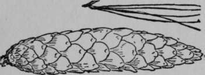
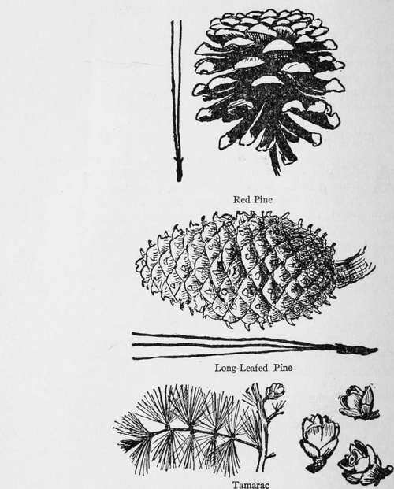
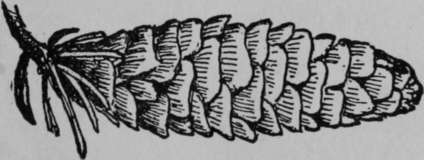
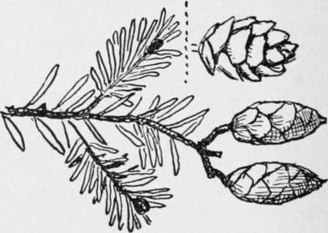
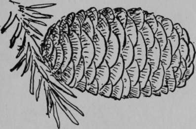
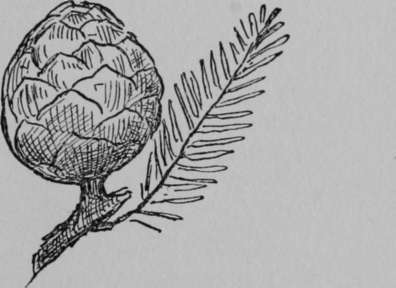
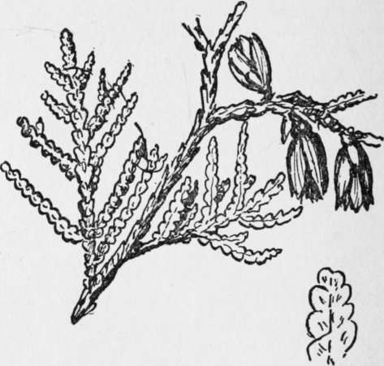
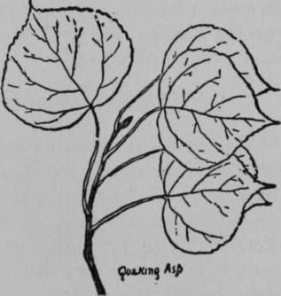

XV. Forestry
Description
This section is from the book "The Book Of Woodcraft", by Ernest Thompson Seton. Also available from Amazon: The Book of Woodcraft.
XV. Forestry
Fifty Common Forest Trees Of Eastern North America. White Pine, Weymouth Pine (Pinus Strobus)
A NOBLE evergreen tree, up to 175 feet high. The lumberman's prize. Its leaves are in bunches of 5, and are 3 to 5 inches long; cones 4 to 8 inches long. Wood pale, soft, straight-grained, easily split.
Warps and checks less than any other of our timbers. A cubic foot weighs 24 lbs. (a cubic foot of water weighs 63 lbs.). Minn. & Man. to Nova Scotia and Penna.
Red Pine, Canadian Pine, Norway Pine (Pinus Resinosa)
Evergreen; somewhat less than the White Pine, with leaves 4 to 6 inches long, in bunches of 2, cones 1 1/2 to 2 1/2 inches long. Wood darker, harder and heavier. A cubic foot weighs 30 lbs. Range as above.
Long Leaved Pine, Georgia Pine, Southern Pine, Yellow Pine, Hard Pine (Pinus Palustris)
A fine tree, up to 100 feet high; evergreen; found in great forests in the Southern States; it supplies much of our lumber now; and most of our turpentine, tar and rosin. Wood strong and hard, a cubic foot weighs 44 lbs. Its leaves are 10 to 16 inches long, and are in bunches of 3's; cones, 6 to 10 inches long. Range, Va. to La. & Fla.
Tamarack, Larch Or Hackmatack (Larix Laricina)
A tall, straight, tree of the northern swamps yet often found flourishing on dry hillsides. One of the few conifers that shed all their leaves each fall. Leaves 1/2 to 1 inch long; cones 1/2 to 3/4 inch. Wood very resinous heavy and hard, "a hard, soft wood" very durable as posts, in Manitoba I have seen tamarack fence posts unchanged after twenty years' wear. It is excellent for firewood, and makes good sticks for a rubbing-stick fire. A cubic foot weighs 39 lbs. Found north nearly to the limit of trees; south to northern New Jersey and Minnesota.
White Spruce (Picea Canadensis)
Evergreen; 60 to 70 or even 150 feet high. Leaves 1/2 to 3/4 inch long; cones 1 1/2 to 2 inches long, are at the tips of the branches and deciduous; the twigs smooth. Wood white, light, soft, weak, straight-grained, not durable; a cubic foot weighs 25 lbs. Its roots afford the wattap or cordage for canoe-building and camp use generally. North to the limit of trees east of Rockies, south to Dakota, Wis. & Maine.
Hemlock (Tsuga Canadensis)
Evergreen; 60 to 70 feet high; occasionally 100; wood pale, soft, coarse, splintery, not durable. A cubic foot weighs 26 lbs. Bark full of tannin. Leaves 1/2 to 3/4 inch long: cones about the same. Its knots are so hard that they quickly turn the edge of an axe or gap it as a stone might; these are probably the hardest vegetable growth in our woods. Wis. to Nova Scotia and south on the mts. to Georgia.
Balsam Tree Or Canada Balsam (Abies Balsamea)
Evergreen; famous for the blisters on its trunk, yielding Canada balsam which makes a woodman's plaster for cuts or a waterproof cement; and for the exquisite odor of its boughs, which also supply the woodmen's ideal bed. Its flat leafage is distinctive. Wood pale, weak, soft, perishable. A cubic foot weighs 24 lbs. N. Alberta to Newf. and south to Va.
Balsam.
Bald Cypress (Taxodium Distichum)
A fine forest tree, up to 150 feet, with thin leaves somewhat like those of Hemlock, half an inch to an inch long; cones rounded about an inch through. Sheds its leaves each fall so is "bald" in winter, noted for the knees or up-bent roots that it develops when growing in water. Timber soft, weak, but durable and valuable; a cubic foot weighs 27 lbs. In low wet country of Mississippi Valley & S. E. coast.
Arbor Vitæ Or White Cedar (Thuya Occidentalis)
Evergreen; 50 to 60 feet high. Wood soft, brittle, coarse-grained, extremely durable as posts; fragrant and very light (the lightest on our list). Makes good sticks for rubbing-stick fire. A cubic foot weighs only 20 lbs.
The scale-like leaves are about 6 to 8 to the inch, the cones half an inch long or less. Man. to Nova Scotia, and Penna; south on mts. to N. C.
Black Willow (Salix Nigra)
The common Willow of stream-banks, usually 20 to 40 feet high, sometimes 100. Bark nearly black. Its long, narrow, yellow-green shining leaves are sufficiently distinctive. A decoction of Willow bark and roots is said to be the best known substitute for quinine. Noted for early leafing and late shedding; leaves 3 to 6 inches long. Wood pale, weak, soft, close-grained; a cubic foot weighs 28 lbs. Man. to Nova Scotia and south to Gulf.

Quaking Asp, Quiver Leaf, Aspen Poplar Or Popple (Populus Tremuloides)
A small forest tree, but occasionally 100 feet high. Readily known by its smooth bark, of a light green or whitish color. The wood is pale, soft, close-grained, weak, perishable, and light. A cubic foot weighs 25 lbs. Good only for paper pulp, but burns well, when seasoned. When green it is so heavy and soggy that it lasts for days as a fire cheek or back-log. Leaves 1 1/2 to 2 inches long. Can. and No. States.

Continue to:
Tags
bookdome.com, books, online, free, old, antique, new, read, browse, download